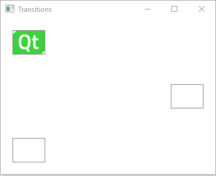

Creating a Qt Quick Application
This tutorial illustrates basic concepts of Qt Quick. For more information about the UI choices you have, see User Interfaces.
This tutorial describes how to use Qt Creator to implement states and transitions when using Qt 6 as the minimum Qt version and CMake as the build system.
We use the Edit mode to create an application that moves a Qt logo between three rectangles when you click them.

For more examples, see Qt Quick Examples and Tutorials.
You can develop Qt Quick applications also in Qt Design Studio. For more information, see Qt Design Studio Manual.
Creating the Project
- Select File > New File or Project > Application (Qt) > Qt Quick Application.
- Select Choose to open the Project Location dialog.
- In the Name field, enter a name for the application. When naming your own projects, keep in mind that they cannot be easily renamed later.
- In the Create in field, enter the path for the project files. You can move project folders later without problems.
- Select Next (or Continue on macOS) to open the Define Build System dialog.
- In the Build system field, select CMake as the build system to use for building and running the project.
Note: If you select qmake, the instructions for configuring the project won't apply.
- Select Next to open the Define Project Details dialog.
- In the Minimal required Qt version field, select Qt 6.2.
- Select Next to open the Translation File dialog.
- Select Next to use the default settings and to open the Kit Selection dialog.
- Select Qt 6.2 or later kits for the platforms that you want to build the application for. To build applications for mobile devices, select kits also for Android and iOS.
Note: Kits are listed if they have been specified in Tools > Options > Kits (on Windows and Linux) or in Qt Creator > Preferences > Kits (on macOS). For more information, see Adding Kits.
- Select Next to open the Project Management dialog.
- Review the project settings, and select Finish (or Done on macOS) to create the project.
For more information about the settings that you skipped and the other wizard templates available, see Creating Qt Quick Applications.
Qt Creator generates a component file, main.qml, and opens it in the Edit mode.
Deploying Applications
The main view of the application displays a Qt logo inside a rectangle in the top left corner of the view and two empty rectangles.
We use the qt-logo.png image in this tutorial, but you can also use any other image or a component, instead.
For the image to appear when you run the application, you must specify it as a resource in the RESOURCES section of CMakeLists.txt file that the wizard created for you:
qt_add_qml_module(transitionsexample
URI transitions
VERSION 1.0
QML_FILES main.qml Page.qml
RESOURCES qt-logo.png
)
Creating Custom QML Types
Because the Window QML type requires states to be added into child components, we use the wizard to create a custom QML type called Page that we will refer to from main.qml.
To create a custom QML type:
- Select File > New File or Project > Files and Classes > Qt > QML File (Qt Quick 2).
- Select Choose to open the Location dialog.
- In the File name field, enter a name for the custom QML type. In this example, we call the type Page.
- Select Next to open the Project Management dialog.
- Select Finish to create Page.qml.
Qt Creator opens Page.qml in the Edit mode. It contains a root item of the type Item that we replace with a Rectangle type. We give the type the ID page, anchor it to the parent item on all sides, and set its color to white:
import QtQuick Rectangle { id: page anchors.fill: parent color: "#ffffff"
Because we develop with Qt 6, where version numbers are not used with modules, we remove the version number from the import statement.
When you start typing the QML type name, Qt Creator suggests available types and properties to complete the code.
Select the light bulb icon  next to the type name to open the Qt Quick Toolbar for rectangles. You can use it to specify rectangle properties, such as color, transparency, and gradients.
next to the type name to open the Qt Quick Toolbar for rectangles. You can use it to specify rectangle properties, such as color, transparency, and gradients.
Next, we add an Image type with qt-logo.png as the source. We position the image in the top-left corner of the rectangle:
Image {
id: icon
x: 20
y: 20
source: "qt-logo.png"
}
You can use the Qt Quick Toolbar for images to specify image properties, such as source file and fill mode.
We now create the rectangles that the image will move between. Their size should match the image size and they should be transparent, so that the image is visible. We set the border color to light gray to make the rectangles visible:
Rectangle {
id: topLeftRect
width: 55
height: 41
color: "#00ffffff"
border.color: "#808080"
We anchor the rectangles to their parent to position them in its top-left and and bottom-left corners, as well as the vertical center of its right edge. The following code snippet anchors a rectangle to the top-left corner of its parent:
anchors.left: parent.left
anchors.top: parent.top
anchors.leftMargin: 20
anchors.topMargin: 20
We add a MouseArea type to make the rectangle clickable by users:
MouseArea {
id: mouseArea
anchors.fill: parent
To check your code, you can compare it with the Page.qml example file.
Next, we will make the image move between the rectangles when users click them, by adding states and by connecting mouse clicks to state changes.
Connecting Mouse Clicks to State Changes
To make the image move between the rectangles when users click them, we add states to the Page component, where we change the values of the x and y properties of icon to match those of the middle right and top left rectangles. To make sure that the image is displayed within the rectangle when the view is scaled on different sizes of screens, we bind the values of the x and y properties of icon to those of the rectangles:
...
states: [
State {
name: "State1"
},
State {
name: "State2"
PropertyChanges {
target: icon
x: middleRightRect.x
y: middleRightRect.y
}
},
State {
name: "State3"
PropertyChanges {
target: icon
x: bottomLeftRect.x
y: bottomLeftRect.y
}
}
]
Then, we connect the onClicked signals of the mouse areas to the state changes:
Connections {
target: mouseArea
function onClicked()
{
page.state = "State1"
}
Because we develop with Qt 6, we must specify the connections as functions.
Adding Page to the Main View
We now open main.qml for editing and add an instance of the Page custom component to it:
import QtQuick Window { width: 640 height: 480 visible: true title: qsTr("Transitions") Page { id: page anchors.fill: parent } }
Press Ctrl+R to run the application, and click the rectangles to move the Qt logo from one rectangle to another.
Animating Transitions
We will now create transitions to apply animation to the image. For example, the image bounces back when it moves to middleRightRect and eases into bottomLeftRect.
We specify transitions for switching from each state to the other two states:
transitions: [
Transition {
id: toState1
ParallelAnimation {
SequentialAnimation {
PauseAnimation {
duration: 0
}
PropertyAnimation {
target: icon
property: "y"
duration: 200
}
}
SequentialAnimation {
PauseAnimation {
duration: 0
}
PropertyAnimation {
target: icon
property: "x"
duration: 200
}
}
}
to: "State1"
from: "State2,State3"
},
We change the easing curve type for transitions to State2 from linear to Easing.OutBounce to create the bounce effect:
Transition {
id: toState2
ParallelAnimation {
SequentialAnimation {
PauseAnimation {
duration: 0
}
PropertyAnimation {
target: icon
property: "y"
easing.type: Easing.OutBounce
duration: 1006
}
}
SequentialAnimation {
PauseAnimation {
duration: 0
}
PropertyAnimation {
target: icon
property: "x"
easing.type: Easing.OutBounce
duration: 1006
}
}
}
to: "State2"
from: "State1,State3"
},
Note: You can use the Qt Quick Toolbar for animation to specify the easing curve type and animation duration.
Then, we change the easing curve type for transitions to State2 from linear to Easing.InOutQuad to create the easing effect:
Transition {
id: toState3
ParallelAnimation {
SequentialAnimation {
PauseAnimation {
duration: 0
}
PropertyAnimation {
target: icon
property: "y"
easing.type: Easing.InOutQuad
duration: 2000
}
}
SequentialAnimation {
PauseAnimation {
duration: 0
}
PropertyAnimation {
target: icon
property: "x"
easing.type: Easing.InOutQuad
duration: 2000
}
}
}
to: "State3"
from: "State1,State2"
}
]
}
Press Ctrl+R to run the application, and click the rectangles to view the animated transitions.
Files:
Images:
{kind=link}